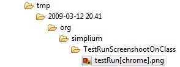

Simple test framework for Selenium.
1-2-3
Follow a simple tutorial on setting up your first Simplium test cases.
Download
Download the lastest version of Simplium.
Current version is 0.4.
Licence
Simplium is distributed under Common Public License.
Overview
Simplium aids the developer to create selenium based unit test that can be executed in different browsers and enviroment. With enviroment means the same test can be run against the developers own machine as well as a test machine somewhere on the network or even the production machine.
A Simplium unit tests doesn't have any reference to which URL the test is executed against as well as no reference to which browser the test should be executed in. Instead the Simplium test cases are annotated with Simplium specific annotations which allow Simplium to take control of the test cases when executed.
Simplium looks for which enviroment it is executed in (development, test or production) and based on this information Simplium will execute the test cases against different servers, against a local selenium remote control or selenium grid and execute each test in the browsers that the enviroment has specificed.
Quick peek
Take a look at a ordinary Selenium test case.
import junit.framework.TestCase;
import com.thoughtworks.selenium.*;
public class ExampleSeleniumTest extends TestCase {
private Selenium selenium;
public void setUp() {
selenium = new DefaultSelenium("localhost",
4444, "*firefox", "http://www.google.com");
selenium.start();
}
public void testGoogleForSomeThings() throws InterruptedException {
selenium.open("/");
assertEquals("Google", selenium.getTitle());
}
public void tearDown() {
browser.stop();
}
}
This test case has the selenium server host and port specificed in the source code, as well as the browser to run the test case in and also which URL the test should run against.
What if we would like to run this test against our development machine and test machine as well? And what if we also would like to run this test in Internet Explorer, Safari and Chrome? It is here Simplium comes to the rescue.
A Simplium based Selenium test case can look like this
package com.company.test;
import junit.framework.Assert;
import org.junit.Test;
import org.junit.runner.RunWith;
import org.simplium.SimpliumWebTest;
import org.simplium.junit.SimpliumJUnitRunner;
@MyCompanyWebTest
@RunWith(SimpliumJUnitRunner.class)
public class ASimpliumGoogleTest extends SimpliumWebTest {
@Test
public void testGoogleTitle() {
selenium.open("/");
Assert.assertEquals("Google", selenium.getTitle());
}
}
The @MyCompanyWebTest is a meta annotation that contains a number of Simplium specific annotation. This annotation combine with a specific JUnit Runner the Simplium can in the backgrund determine the current enviroment, what browser to execute the test case in and to set up a Selenium server.
package com.company.test;
import java.lang.annotation.Documented;
import java.lang.annotation.Inherited;
import java.lang.annotation.Retention;
import java.lang.annotation.RetentionPolicy;
import org.simplium.annotation.Browsers;
import org.simplium.annotation.Enviroments;
import org.simplium.annotation.Screenshot;
import org.simplium.annotation.Screenshot.CaptureRule;
@Browsers
@Enviroments(
development = {
"localhost",
"4444",
"http://localhost:8080"
},
test = {
"grid.company.com",
"4444",
"http://test.google.com"
},
production = {
"grid.company.com",
"4444",
"http://www.google.com"
}
)
@Retention(RetentionPolicy.RUNTIME)
@Documented
@Inherited
public @interface MyCompanyWebTest {
}
The @MyCompanyWebTest is listed abow. The @Browsers indicates what browser to use. For now the default browsers are used which means that each test case run in the development enviroment is run in Firefox and Internet Explorer. When using test it is run in a number of other browsers as well.
@Enviroment defines the Selenium server host, port and the URL to test against for each of the three specificed enviroments. This means that for @MyCompanyWebTest a local Selenium server is started in development enviroment and the test is executed against localhost:8080. When running in test Simplium lets a Selenium grid execute the test cases. The grid is located at grid.company.com:4444. The test cases are then executed against test.google.com. Prodution also uses the Selenium grid but the test cases are executed against www.google.com.
To take control of which browser that the test should be executed in and not use the default ones the @Browsers annotation can be feed with this information.
@Browsers(
development = {
"*iexplorer",
"*firefox"
},
test = {
"*iexplorer",
"*firefox",
"*googlechrome",
"*opera",
"*safari"
},
production = {
"*iexplorer",
"*firefox",
"*googlechrome",
"*opera",
"*safari"
}
)
The @Browsers annotation can also be used on a test case method to override the @Browser annotation on the class level. This if some part of the web application can't be executed with certain browser(s).
Simplium also aids the developer to find out why a test case fails. When Simplium javacode that a test case fails, through a assert or by a unknown not caught exception Simplium can be instructed to take a screenshot of the browser so that developer can see exactly what happened on the screen when the fail occured. This is done by marking the meta annotation with the @Screenshot annotation.
@Screenshot(CaptureRule.CAPTURE_WHEN_EXCEPTION_OCCURES)
public @interface MyCompanyWebTest {
}
Simplium will create a .png under the tmp directory followed by the current execution time and the test class that failed.
There is a number of other annotation that also can be used, @Delay, @RunOnlyInDevelopment, @RunOnlyInTest and @RunOnlyInProduction.
To get started with Simplium the basic tutorial is a good start.
Reviews
“Simplium, marries Selenium RC and JUnit 4.5 to allow you to easily include selenium test in your automated testing framework."
Requirements
Simplium requires JUnit 4.5 and Selenium RC 1.0.1 or higher.
These dependencies can be downloaded together with Simplium.
JavaDoc
See the Simplium JavaDoc here.
Developed by
Simplium is developed by Markus Backman.
markus [the curly a] sektor [dot] se
Simple test framework for Selenium.